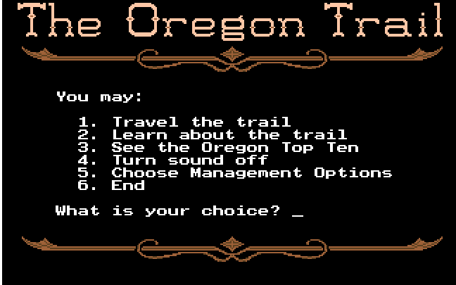

The Oregon Trail Android Port
The idea of this project is to recreate the DOS version of The Oregon Trail for android devices, porting over as much as possible using the original DOS and AppleII source code which is available freely on the internet. This project will use Android studio and Java/XML with the hopes of releasing it onto the google play store for free
Why The oregon trail

have always really enjoyed playing The Oregon Trail for a long time. It's an interesting game for killing time and getting a quick history lesson as well. One problem that I have found is that there are no versions freely available for phones that I can play when travelling other than ad filled zombie apocalypse ripoffs, and so for a while I have been tossing around the idea of attempting to make a port for android not only for my personal enjoyment but so it is more accessible for people to play for free.
Description
The Oregon trail port will be available on the most used versions of Android OS so it is accessible to as large a portion of android users as possible.
Besides the hunting mini-game, A large portion of the game will be text and a handful of 16-bit scenes and sprites to represent historical locations the player can stop at along the trail, e.g; Chimney rock, Soda Springs, Fort Bridger.
It will contain 8-bit Recreations of historical american songs from the era that were used in several of the original PC versions of the game such as; At The Foot of Yonder Mountain, Hard times, Old Dan Tucker.
When the game has been successfully completed and one or more of the players wagon members survive, The game will tally up certain variables from the game such as; Starting character (the banker starts with more money and thus will have more supplies and a better chance of surviving the trail than the farm or the carpenter), Time spent on the trail, Deaths, illnesses and left over supplies, the game will then award the player with a Game score which will be held locally in the game for the player to compete against. If time and my skills allow it I would like to attempt to make a Leaderboard connected to a players google play account so they can view and compete against other players scores around the world.
One of the important elements of the project is the historical aspect. Not only Giving the player information about historical landmarks and towns along the trail, but also giving insight into the dangers of the frontier age to show the player what it was like in the everyday life of an american in that era as the game will detail some historical information about landmarks and towns encountered along the trail. The player will learn when they were built/discovered, the cultural/historical value of the surrounding lands to both the native americans and colonial settlers, the importance of the town/landmark to the people along the trail and if it still stands today in the modern age.
Another important part to the success of this project is to remake the hunting mini-game. The hunting Mini-game in the Oregon Trail is about attempting to shoot and kill game for food as you travel the trail and supplies become harder to procure. The original Oregon trail made this mini-game brutally hard and for something that was important to be successful at in order to survive the trail and win, the game made it almost impossible to hunt game animals successfully on many versions of the game and made winning the game less accessible to a lot of players.
The hunting mini-game needs to not only be remade into something that is possible, but also remade to be compatible with a touchscreen and does not require buttons on the screen, only finger movements.
Required tools and technology
There is only a handful of programs and physical objects needed to complete this project. Besides a computer and an Android Device to test the application on. All we need are a few applications such as:
Android Studio, An Android exclusive IDE developed by Google and JetBrains that uses java as its language
Java JDK, the language the game with be ported with, Java is an object oriented programming language. The JDK contains many programming tools and components.
Gimp, Gimp is an open source graphics editor that will be used to recreate the scenes and sprites from the DOS version of the game.
Required Skills
For this project there are only a few skills needed to successfully complete it.
Time management
The deadline for this project may seem far away but unless my time management is in track that time can pass very quickly without realising. One of the biggest struggles I have is managing my time appropriately and unless I work on this skill i know that i could fail this project or even this course in general.
Java
although I have had experience with game development and object oriented programming in the past, Java is still a very new language to me and most of the project will have to be written in java so it is compatible with android studio. I am hoping the introduction to programming unit will give me enough knowledge and understanding of the language over time to help me complete it.
Outcome
If this project is successful then I will finally have a proper version of The Oregon Trail to play on my phone during long drives, alternatively it will also mean there will be a free version of The Oregon trail for all android users to download and play without hassle. It will also be something of pride to place into my digital portfolio for future career prospects to see. Although it will not have any major impact on the world i'm sure it will make some Oregon Trail enthusiasts happy.